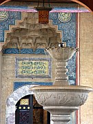

Disclaimer: These pages are not actively maintained, and some of the practical information on the site is out of date. I am working on a new version of the site that will focus more on my photos and memories of travel in Southeast Europe, and less on practical details that too easily become obsolete. In the meantime, please treat the information here with caution.

Sarajevo from the east
Miljacka River

Gazi-Husrevbey Mosque
Latin Bridge
Shop in Baščaršija
Eternal Flame
Jewish Cemetery
Goat Bridge
Velika Aleja, Ilidža

Bukovik Mountain

Lukomir Village
More photos of Sarajevo in the
Bosnia and Herzegovina Galleries
Sarajevo
Sarajevo is arguably the most likeable capital city in the Balkans. Like any Eastern European city it has its fair share of drab twentieth century concrete blocks, but they are easily ignored as you stroll through the compact Ottoman and Hapsburg core, wrapped in its cradle of green hills. Over the last few centuries the city has charmed all kinds of visitors, from Ottoman traders to Olympic athletes. Maybe you will be next...
Central Sarajevo
A good place to start exploring Sarajevo's old Ottoman quarter is Baščaršija Square or Sebilj, an oblong open space much loved by pigeons (in fact foreigners sometimes refer to it as "pigeon square"). From here narrow cobbled streets lined with small shops lead through the Baščaršija quarter. It's a low-rise area, with only the Clock Tower and a few minarets piercing the skyline. The pedestrianised Ferhadija street cuts through the area and is always busy with both locals and foreigners strolling and people-watching. If you are looking for a souvenir of the 1984 Winter Olympics, or a T-shirt with the slogan "Don't panic, I'm Islamic", this is the place to come. It's also the location of one of Sarajevo's most impressive buildings, the Gazi Husrev Beg Mosque. The grounds include two tombs (turbe) and an elaborate fountain. Head a few blocks north of Baščaršija Square to find Svrzo's House, a particularly spacious example of Ottoman-era domestic architecture.
To the east of the centre the streets lead steeply uphill to the ruined Jajce fortress, from where there are great views over the city. It almost seems like you could reach out and touch the National Library, the prominent brick building by the river.This slightly bizarre Austrian take on Moorish architecture is one of the few prominent buildings in the centre that has not been repaired. Watch out for odd patches of grass haphazardly dotted with old tombstones, a common sight in this and other parts of Sarajevo. Most are crowned with turbans and each one seems to lean at a slightly different angle. This part of the city is at its most atmospheric as the sun goes down, the lights appear on the minarets and the call to prayer rolls over the city. There are similarly good views from the hillside Alifakovac cemetery on the other side of the river.
Follow Ferhadija to the west out of Baščaršija (if you can tear yourself away from the enticing aromas of grilled meat), leaving the Eastern atmosphere disappear behind as you enter an area of stolid Central European architecture. You'll pass the Catholic Cathedral and the city's largest Orthodox church, in front of which chess players eternally ponder the next move. The most impressive buildings from the period of Austrian rule are along the Miljacka River. As well as the National Library you'll also find the National Theatre and the main Post Office. Both have been sumptuously restored in the last few years - pop into the post office to see the impressive main hall. Also nearby is the elegant Latin Bridge, where Gavrilo Princip shot Archduke Franz Ferdinand in 1914. A small museum on the corner displays exhibits relating to the event in the windows. On the other side of the river are yet more examples of Sarejevo's spiritual history: the former Evangelical Church, the Franciscan monastery, and (perhaps inspiring the deepest spiritual feelings of all) the colourful premises of the Sarajevo Brewery.
Beyond the Eternal Flame, Ferhadija broadens into Tito boulevard and you enter Novo Sarajevo, the more modern part of the city. Most tourists only visit this area to get to the bus and train stations, visit the National Museum and Historical Museum, and perhaps glance at one of the world's most famous Holiday Inns - a weirdly familiar sight for anyone who watched news reports from besieged Sarajevo in the 1990s.
Physically at least, Sarajevo has recovered reasonably well from the siege in the 1990's, one of the longest in European history. There are still quite a few ruined or half-restored buildings and derelict sites, but then most Balkan cities have some of these for entirely different reasons. Certainly the destruction is not as immediately obvious as in Mostar. If you are interested in this subject, look out for the "Sarajevo Survival Map", which illustrates the events of the siege and shows exactly where in the city they happened. I haven't visited the Tunnel Museum, near the airport, but some travellers report being very impressed by it. It's a small section of the tunnel beneath the airport runway that linked Sarajevo with the outside world. It's also a moving experience to walk among the graves near the Koševo stadium, so many of which bear dates between 1991 and 1995. The scars of war are also visible in the Jewish Cemetery on a hillside in Kovačići; the graveyard was close to the front line during the siege and almost all of its distinctive tombstones were heavily damaged.
Strolling in the suburbs
Sarajevo's hilly surroundings mean that it's easy to find enjoyable walks past attractive houses, small mosques, graveyards, well-tended gardens patrolled by equally well-tended cats, and great views over the city. Bistrik to the south, and Sedrenik, Breka, and Smreke to the north, are all worth exploring.
One of the nicest walks doesn't involve any hills at all. Starting from the eastern end of Baščaršija, follow a pedestrianised road along the north bank of the Miljacka into a narrower part of the valley - it becomes increasingly peaceful as you leave the flyovers behind. It should take less than an hour to reach the graceful Goat Bridge, in wooded surroundings that could almost make you forget you have just left a capital city.
The spa town of Ilidža, 10km south-west of the centre in the shadow of Mount Igman, has been swallowed by Sarajevo's modern suburbs. Fortunately it still retains a large area of parkland - another good place for a non-hilly walk. A long, straight, tree-lined avenue, Velika Aleja, leads from the spa buildings to Vrelo Bosne, the source of the Bosna River. It's popular with walkers, joggers, and cyclists, and at weekends carriage rides are offered as they have been since Austro-Hungarian times. At Vrelo Bosne you'll find a series of islands linked by wooden bridges. Another graceful bridge, Rimski Most, is nearby; this time there are seven arches. Unfortunately it feels almost forgotten in a kind of no-man's land near the main road.
More time and energy is required for an excursion to Skakavac Waterfall and Bukovik Mountain, north of Sarajevo - a good way to get a quick taste of mountainous central Bosnia (but not to be confused with a second Skakavac Waterfall in Sutjeska National Park). From the village of Nahorevo, follow the "main" track leading north or north-east, ignoring any secondary tracks leading down to the river. The scenery becomes increasingly rural as the city disappears behind you; soon sheep are the only company. After about 3km you should come to an information board with a map of the trails in the area; Skakavac Waterfall is another 3km away along a forest path. A fairly thin stream of water vaults over the edge of a cliff and falls nearly 100m - this is Bosnia's highest waterfall. There are many other marked trails in the surrounding hills, some of which offer fine views over Sarajevo in its valley. When I first visited the whole lower part of the city was covered by mist, and the ghostly Hum communication tower seemed to float above it. On a later visit I walked from the waterfall to the summit of Bukovik, and then over rolling hills to the Barice picnic area a short distance from the city.
You may find yourself tantalised by the higher mountains south of Sarajevo, including Bjelasnica, the site of many of the events in the 1984 Winter Olympics. In addition to the there are a number of interesting villages on the slopes of the mountain. One of the best-known is Lukomir, a huddle of stone houses on the edge of the Rakitnica gorge. Despite being so close to Sarajevo it feels like a different world. The harsh weather means that the village is beyond the reach of vehicle transport for much of the year - there was snow on the ground when I visited in early September, when tourists were still baking under the sun on the Adriatic Coast.
In several of the areas described above you may notice marked minefields. To be on the safe side, stick to roads and paths and resist the urge to explore any ruins. In fact you are probably in more danger from cars - Sarajevans tend to fling their big German automobiles around quite recklessly on the hilly roads.
There are a number of other possible excursions from Sarajevo. Mostar can certainly be visited as a day trip, as the city itself is quite small. However, if you have time it's worth staying in Mostar for a couple of nights and visiting some other places in Herzegovina. Travnik also makes a good target for a day trip.
Practicalities
If you are staying more than a few days I recommend getting hold of the excellent city map published by Sejtarija. It's especially helpful for exploring the suburbs, whether on foot or by public transport - the latter is shown in great detail.
Sarajevo's centre is compact and most places of interest can easily be reached by walking. It's easy to venture further afield on the good, if very crowded, public transport system. Buy tickets from a kiosk and validate them as soon as you get on a tram, trolley, or bus - try to get on at the entrance door, otherwise you will have to fight your way through a crowd to reach the machine. A one-day ticket (dnevna karta) is useful if you plan to take three or more trips in a day on any form of local transport. The train station and main bus stations are located side by side to the west of the centre, at the terminus of tram #1.
To get to the Goat Bridge, just keep walking along the north bank of the Miljacka River from the centre. Ilidža is easy to get to as it is the terminus for many routes, including trams #3, #4, and #6; head south-west and cross the river to reach the start of Velika Aleja. To get to Nahorevo, the starting point for the Skakavac Waterfall walk, take minibus #69 from Koševo to its last stop. Minibus #64 goes to the Barice recreation area, but only at weekends. A handful of buses head to Bjelasnica mountain from the tram terminus at Ilidža, but many of the villages (including Lukomir) are a long way from any public transport. If you don't have a car it is probably easier to explore this area on a guided tour from an organisation such as GreenVisions (see the Links page).
Sarajevo has two long-distance bus stations - see the FAQ for more details about buses. There are also two trains to Mostar, one in the early morning and one in the evening; morning and night trains to Zagreb (9-10 hours) via Banja Luka; and daytime trains to Budapest (12 hours) and Sarajevo (9 hours).
What they said about Sarajevo ...
The town lies full-fed in the trough by the red river, and rises up the bowl of the blunt-ended valley in happy, open suburbs where handsome houses stand among their fruit trees. There one may live very pleasantly, looking down on the minarets of the hundred mosques of Sarajevo, and the tall poplars that march the course of the red-running river. The dead here also make for handsomeness, for acres and acres above these suburbs are given up to the deliberate carelessness of the Moslem cemeteries.
- Rebecca West, Black Lamb and Grey Falcon, 1941
Anyone who has seen the streets of Sarajevo, and its bazaar, as sparkling as a mirror, or the spruce orderliness of Sofia, and compares these with what obtains in cities or countries held up as paragons of civilization, is inclined to use the term "Balkan" as a compliment, as others tend to employ the word "Scandinavian".
- Claudio Magris, Danube, 1986
If Belgrade [under Ottoman rule] was all martial punch, Sarajevo expressed the Ottoman instinct for gentle hospitality. It was in Sarajevo that the camel caravans from Anatolia and beyond terminated. The Sarajevans were widely noted for their gentleness and their learning.
- Jason Goodwin, Lords of the Horizons, 1998